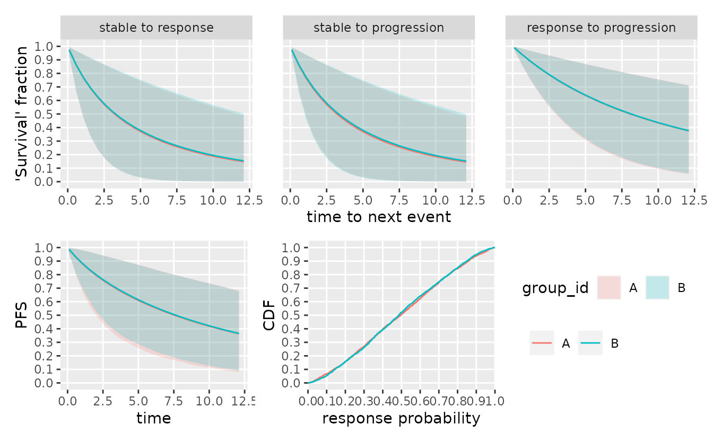
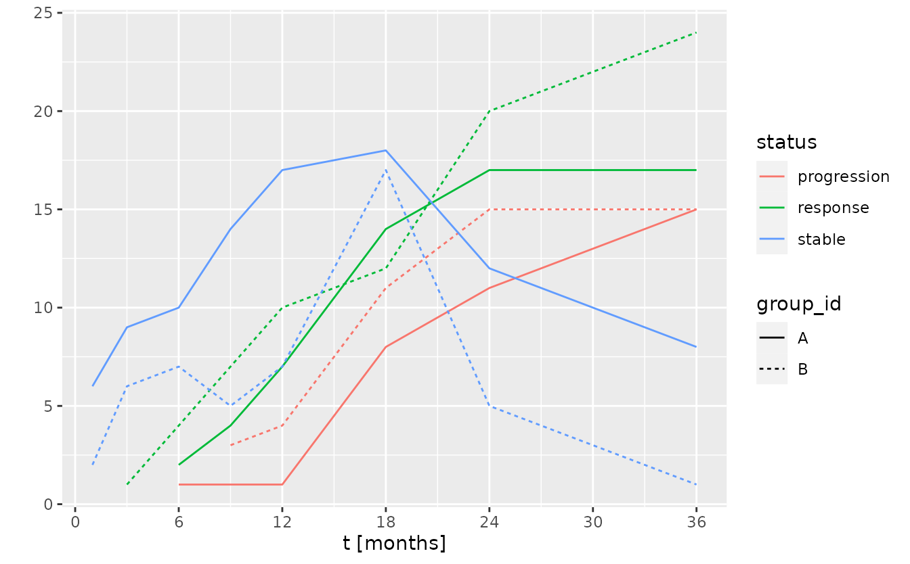

Application to Probability of 'go'
Kevin Kunzmann
Source:vignettes/web_only/application-to-probability-of-success.Rmd
application-to-probability-of-success.Rmd
library(oncomsm)
library(ggplot2)
library(dplyr, warn.conflicts = FALSE)
library(tidyr)
library(future) # parallel processing
library(doFuture)
#> Loading required package: foreach
library(doRNG) # parallel safe random number generation
#> Loading required package: rngtools
registerDoFuture()
plan(multisession) # instruct future how to run in parallel
set.seed(42L)tl;dr: A multi-state model allows sampling individual-level data. This can be used to impute future trial data from the prior-predictive distribution at the planning stage. The generated trial data can then be used to evaluate quantitative ‘go’ decision criteria to determine whether the sampled data would lead to a ‘go’ decision. The average sampled ‘go’ rate over multiple such data sets is the a MCMC approximation of the probability of ‘go’. A similar approach can be taken at any interim time point by sampling from the posterior predictive distribution conditioning on any observed data. This then leads to an updated (or conditional) probability of ‘go’.
For a general introduction to the multi-state approach used throughout this package, see the vignette Multi-state Models for Early Oncology.
Decision criteria and probability of ‘go’
Let \(D_t \in \mathbb{D}\) be the observed (visit) data at time point \(t\) after the start of the trial. Let \(\tau\) be the stopping time of the trial, e.g., the time point when all \(n\) individuals have been recruited and have reached their minimal follow-up. The final decision on ‘go’ can then be modeled as a function \(\phi: \mathbb{D} \to \{0,1\}\) with
\[\phi(D_\tau)=1 :\Leftrightarrow D_\tau\ \ \text{leads to 'go'}\ . \]
Let \(\theta\) be a vector of parameters for a generative model that allows to sample data \(D_\tau|\theta\). Probability of ‘go’ can the be calculated as expected value of the decision rule under a prior distribution (density) \(f(\theta)\) over the parameter space: \[ \operatorname{Pr}\big[\,go\,\big] = \int \phi(D_\tau\,|\,\theta) \cdot f(\theta) \operatorname{d}\theta \ . \] In practice, this integral can be approximated by sampling from the generative model and calculating the average ‘go’ rate.
If data \(D_t=d_t\) is observed, the probability of ‘go’ can be updated using Bayes Theorem \[ \operatorname{Pr}\big[\,go\,|\, D_t=d_t \,\big] = \int \phi(D_\tau\,|\,D_t=d_t,\theta) \cdot f(\theta\,|\,D_t=d_t) \operatorname{d}\theta \] where \(f(\theta\,|\,D_t=d_t)\) is the posterior density given the data \(d_t\) observed up to time \(t\).
Examples for such decision rules could be
- a quantile of the posterior distribution of the response rate being above a certain relevance threshold,
- a quantile of the posterior distribution of the PFS6 rate being above a certain relevance threshold,
- a quantile of the posterior distribution of PFS being above a certain threshold,
- or a combination of the above.
Consider a situation with a trial including two different arms “A” and “B”. Assume that the following prior for the Weibull SRP multi-state model with three arms/groups is given.
mdl <- create_srp_model(
group_id = c("A", "B"),
logodds_mean = logodds(c(0.1, 0.9)),
logodds_sd = rep(3, 2L),
median_time_to_next_event = matrix(c(
2, 6, 24,
2, 6, 24
), byrow = TRUE, nrow = 2, ncol = 3),
median_time_to_next_event_sd = matrix(3, byrow = TRUE, nrow = 2, ncol = 3),
visit_spacing = rep(1.2, 2),
recruitment_rate = c(40 / 24, 40 / 24)
)One can now sample from the prior and visualize the prior assumptions.
smpl_prior <- sample_prior(mdl, seed = 6835L)
plot(mdl, dt = c(0, 36), sample = smpl_prior, n_grid = 25)
A composite ORR and PFS12 ‘go’ criterion
Assume that a ‘go’ is defined as a combination of a sufficiently high response rate and a sufficiently high progression-free-survival rate at 12 months:
\[\phi(D_\tau) := \begin{cases} 1 \quad \text{if} \quad \operatorname{Pr}\big[\,\text{ORR} \geq 0.3\ \&\ \text{PFS}_{t=12} \geq 0.4 \, | \, D_\tau\,\big] \geq 0.8 \\ 0 \quad \text{else.} \end{cases}\]
This decision criterion can be implemented as the following function:
go <- function(data, nsim = 200L) {
set.seed(3819308) # fix the seed for reproducibility
smpl <- suppressWarnings( # low sample size leads to stan warnings on ESS
# can be ignored, errors average out
# can also be avoided by increasing nsim
sample_posterior(mdl, data = data, warmup = 200L, nsim = nsim)
)
tbl_pfs_orr <- bind_cols(
sample_pfs_rate(mdl, 12, smpl), # PFS 12
parameter_sample_to_tibble(mdl, smpl) %>% # ORR
filter(parameter == "p") %>%
transmute(orr = value)
)
res <- tbl_pfs_orr %>% # apply decision criterion
group_by(group_id) %>%
summarize(
go = mean(pfs >= 0.5 & orr >= 0.3) >= 0.8
)
return(res)
}An example of how to apply the criterion to a sample from the prior predictive distribution is given below:
tbl_prior_predictive <- sample_predictive(
mdl,
n_per_group = rep(40L, 2),
sample = smpl_prior,
nsim = 1L,
seed = 34930L
)
go(tbl_prior_predictive)
#> # A tibble: 2 × 2
#> group_id go
#> <chr> <lgl>
#> 1 A FALSE
#> 2 B TRUENext, we can create a table of multiple prior-predictive samples.
Grouping them by iteration and nesting the data frames results in a data
frame of data frames, where tbl_prior_predictive$data[[i]]
corresponds to the data in the \(i\)-th
resample.
tbl_prior_predictive <- sample_predictive(
mdl,
n_per_group = rep(40L, 2),
sample = smpl_prior,
nsim = 100L, # same, here, only for demonstration purposes
seed = 34930L
) %>%
group_by(iter) %>%
tidyr::nest() %>%
ungroup()
print(tbl_prior_predictive)
#> # A tibble: 100 × 2
#> iter data
#> <int> <list>
#> 1 1 <tibble [1,443 × 4]>
#> 2 2 <tibble [1,637 × 4]>
#> 3 3 <tibble [1,152 × 4]>
#> 4 4 <tibble [2,335 × 4]>
#> 5 5 <tibble [1,704 × 4]>
#> 6 6 <tibble [1,743 × 4]>
#> 7 7 <tibble [1,715 × 4]>
#> 8 8 <tibble [938 × 4]>
#> 9 9 <tibble [1,795 × 4]>
#> 10 10 <tibble [1,964 × 4]>
#> # … with 90 more rowsApplying the decision criterion to each of them and averaging over all iterations is an MCMC approximation of the probability of ‘go’.
# compute results in parallel
res <- foreach(i = seq_len(nrow(tbl_prior_predictive))) %dorng% {
go(tbl_prior_predictive$data[[i]])
}
# bind results together and aggregate to probability of 'go'
tbl_pr_go <- bind_rows(res, .id = "iter") %>%
group_by(group_id) %>%
summarize(
`Pr[go]` = mean(go),
se = sd(go) / sqrt(n())
)
print(tbl_pr_go)
#> # A tibble: 2 × 3
#> group_id `Pr[go]` se
#> <chr> <dbl> <dbl>
#> 1 A 0.17 0.0378
#> 2 B 0.67 0.0473Updating the probability of ‘go’ during a trial
The Bayesian generative model allows calculating the posterior distribution at any time point given the data observed up to that point. The future course of the trial can then be sampled from the posterior predictive distribution.
To illustrate the shift in ‘go’ probability over time, a single trial realization from a set of fixed response probabilities that conflict with the prior mean is sampled as hypothetical data. As data accrues, the evidence will lead to a shift in the posterior probability and thus the probability of ‘go’.
tbl_data <- sample_predictive(
mdl,
p = c(0.65, 0.45), ## conflicting prior expectation
n_per_group = c(40L, 40L),
nsim = 1,
seed = 23849
)
print(tbl_data)
#> # A tibble: 1,875 × 5
#> subject_id group_id t state iter
#> <chr> <chr> <dbl> <chr> <int>
#> 1 ID00326638 A 4.84 stable 1
#> 2 ID00326638 A 6.04 stable 1
#> 3 ID00326638 A 7.24 stable 1
#> 4 ID00326638 A 8.44 stable 1
#> 5 ID00326638 A 9.64 stable 1
#> 6 ID00326638 A 10.8 stable 1
#> 7 ID00326638 A 12.0 stable 1
#> 8 ID00326638 A 13.2 stable 1
#> 9 ID00326638 A 14.4 stable 1
#> 10 ID00326638 A 15.6 stable 1
#> # … with 1,865 more rowsNext, interim views of the full data set at a sequence of time points can be created. This data subsets correspond to the data available at potential interim analyses.
tbl_data_interims <- tibble(
t_interim = c(1, 3, 6, 9, 12, 18, 24, 36) # interim time point (months)
) %>%
mutate(
data = purrr::map(t_interim, ~filter(tbl_data, t <= .))
)
print(tbl_data_interims)
#> # A tibble: 8 × 2
#> t_interim data
#> <dbl> <list>
#> 1 1 <tibble [6 × 5]>
#> 2 3 <tibble [26 × 5]>
#> 3 6 <tibble [74 × 5]>
#> 4 9 <tibble [135 × 5]>
#> 5 12 <tibble [221 × 5]>
#> 6 18 <tibble [435 × 5]>
#> 7 24 <tibble [724 × 5]>
#> 8 36 <tibble [1,149 × 5]>For each such interim data set, the remainder of the trial can be imputed by sampling form the posterior-predictive distribution given the data observed up to this point. The probability of ‘go’ is then the average ‘go’ rate in the posterior predictive sample when applying the decision criterion.
First, the calculation of the probability to ‘go’ is wrapped in a
function that accepts a dataset (tbl) and the number of
resamples (nsim).
pr_go <- function(tbl, nsim) {
# sample forward from the posterior predictive distribution given data in tbl
tbl_posterior_predictive <- impute(
mdl, tbl, n_per_group = rep(40L, 2), nsim = nsim
) %>%
group_by(iter) %>%
tidyr::nest()
# determine for each sampled trial whether it ends in a 'go'
res <- foreach(i = 1:nsim) %dorng% {
go(tbl_posterior_predictive$data[[i]])
}
tbl_pr_go <- bind_rows(res, .id = "iter") %>%
group_by(group_id) %>%
summarize(
`Pr[go]` = mean(go),
se = sd(go) / sqrt(n())
)
return(tbl_pr_go)
}Next, this function is mapped over all interim time points with the respective interim data. The number of simulations is the main factor in determining the runtime of the program besides the number of samples drawn from the posterior distribution to evaluate the decision criterion.
tbl_pr_go_over_time <- tbl_data_interims %>%
mutate(
res = purrr::map(data, pr_go, nsim = 100L)
) %>%
tidyr::unnest(res)
#> Warning: The largest R-hat is 1.07, indicating chains have not mixed.
#> Running the chains for more iterations may help. See
#> https://mc-stan.org/misc/warnings.html#r-hat
#> Warning: Bulk Effective Samples Size (ESS) is too low, indicating posterior means and medians may be unreliable.
#> Running the chains for more iterations may help. See
#> https://mc-stan.org/misc/warnings.html#bulk-ess
#> Warning: Tail Effective Samples Size (ESS) is too low, indicating posterior variances and tail quantiles may be unreliable.
#> Running the chains for more iterations may help. See
#> https://mc-stan.org/misc/warnings.html#tail-ess
#> Warning: The largest R-hat is 1.06, indicating chains have not mixed.
#> Running the chains for more iterations may help. See
#> https://mc-stan.org/misc/warnings.html#r-hat
#> Warning: Bulk Effective Samples Size (ESS) is too low, indicating posterior means and medians may be unreliable.
#> Running the chains for more iterations may help. See
#> https://mc-stan.org/misc/warnings.html#bulk-ess
#> Warning: Tail Effective Samples Size (ESS) is too low, indicating posterior variances and tail quantiles may be unreliable.
#> Running the chains for more iterations may help. See
#> https://mc-stan.org/misc/warnings.html#tail-ess
#> Warning: Bulk Effective Samples Size (ESS) is too low, indicating posterior means and medians may be unreliable.
#> Running the chains for more iterations may help. See
#> https://mc-stan.org/misc/warnings.html#bulk-ess
#> Warning: Tail Effective Samples Size (ESS) is too low, indicating posterior variances and tail quantiles may be unreliable.
#> Running the chains for more iterations may help. See
#> https://mc-stan.org/misc/warnings.html#tail-ess
#> Warning: Bulk Effective Samples Size (ESS) is too low, indicating posterior means and medians may be unreliable.
#> Running the chains for more iterations may help. See
#> https://mc-stan.org/misc/warnings.html#bulk-ess
tbl_pr_go_over_time
#> # A tibble: 16 × 5
#> t_interim data group_id `Pr[go]` se
#> <dbl> <list> <chr> <dbl> <dbl>
#> 1 1 <tibble [6 × 5]> A 0.23 0.0423
#> 2 1 <tibble [6 × 5]> B 0.77 0.0423
#> 3 3 <tibble [26 × 5]> A 0.17 0.0378
#> 4 3 <tibble [26 × 5]> B 0.94 0.0239
#> 5 6 <tibble [74 × 5]> A 0.7 0.0461
#> 6 6 <tibble [74 × 5]> B 1 0
#> 7 9 <tibble [135 × 5]> A 0.83 0.0378
#> 8 9 <tibble [135 × 5]> B 0.98 0.0141
#> 9 12 <tibble [221 × 5]> A 0.75 0.0435
#> 10 12 <tibble [221 × 5]> B 0.91 0.0288
#> 11 18 <tibble [435 × 5]> A 0.68 0.0469
#> 12 18 <tibble [435 × 5]> B 0.94 0.0239
#> 13 24 <tibble [724 × 5]> A 0.6 0.0492
#> 14 24 <tibble [724 × 5]> B 0.28 0.0451
#> 15 36 <tibble [1,149 × 5]> A 0.59 0.0494
#> 16 36 <tibble [1,149 × 5]> B 0.01 0.01The change of the ‘go’ probability over time is shown below with error bars corresponding to the standard error of the simulation.
ggplot(tbl_pr_go_over_time) +
aes(t_interim) +
geom_errorbar(aes(ymin = `Pr[go]` - se, ymax = `Pr[go]` + se,
color = group_id), width = 1) +
geom_line(aes(y = `Pr[go]`, color = group_id), alpha = 0.33) +
scale_x_continuous("t [months]", breaks = seq(0, 36, by = 6)) +
scale_y_continuous(breaks = seq(0, 1, by = 0.1), limits = c(0, 1))This can be compared to the number of available responses, progressions, and stable individuals at each time point.
f <- function(tbl) {
tbl %>%
group_by(group_id, subject_id) %>%
summarize(
responder = any(state == "response") && all(state != "progression"),
progressor = any(state == "progression"),
stable = all(state == "stable"),
.groups = "drop_last"
) %>%
summarize(
response = sum(responder),
progression = sum(progressor),
stable = sum(stable)
)
}
tbl <- tibble(
t_interim = tbl_data_interims$t_interim,
summary = purrr::map(tbl_data_interims$data, f)
) %>%
unnest(summary)
pivot_longer(tbl, c(response, progression, stable), names_to = "event") %>%
ggplot() +
aes(t_interim, value, color = event, linetype = group_id) +
geom_line() +
scale_x_continuous("t [months]", breaks = seq(0, 36, by = 6)) +
scale_y_continuous("", breaks = seq(0, 30, by = 5))
Session info
sessionInfo()
#> R version 4.2.2 (2022-10-31)
#> Platform: x86_64-pc-linux-gnu (64-bit)
#> Running under: Ubuntu 22.04.1 LTS
#>
#> Matrix products: default
#> BLAS: /usr/lib/x86_64-linux-gnu/openblas-pthread/libblas.so.3
#> LAPACK: /usr/lib/x86_64-linux-gnu/openblas-pthread/libopenblasp-r0.3.20.so
#>
#> locale:
#> [1] LC_CTYPE=C.UTF-8 LC_NUMERIC=C LC_TIME=C.UTF-8
#> [4] LC_COLLATE=C.UTF-8 LC_MONETARY=C.UTF-8 LC_MESSAGES=C.UTF-8
#> [7] LC_PAPER=C.UTF-8 LC_NAME=C LC_ADDRESS=C
#> [10] LC_TELEPHONE=C LC_MEASUREMENT=C.UTF-8 LC_IDENTIFICATION=C
#>
#> attached base packages:
#> [1] stats graphics grDevices utils datasets methods base
#>
#> other attached packages:
#> [1] doRNG_1.8.2 rngtools_1.5.2 doFuture_0.12.2 foreach_1.5.2
#> [5] future_1.29.0 tidyr_1.2.1 dplyr_1.0.10 ggplot2_3.4.0
#> [9] oncomsm_0.1.1.9000
#>
#> loaded via a namespace (and not attached):
#> [1] Rcpp_1.0.9 listenv_0.8.0 prettyunits_1.1.1
#> [4] ps_1.7.2 rprojroot_2.0.3 digest_0.6.30
#> [7] utf8_1.2.2 parallelly_1.32.1 R6_2.5.1
#> [10] backports_1.4.1 stats4_4.2.2 evaluate_0.18
#> [13] highr_0.9 pillar_1.8.1 rlang_1.0.6
#> [16] callr_3.7.3 jquerylib_0.1.4 checkmate_2.1.0
#> [19] rmarkdown_2.18 pkgdown_2.0.6 labeling_0.4.2
#> [22] textshaping_0.3.6 desc_1.4.2 stringr_1.4.1
#> [25] loo_2.5.1 munsell_0.5.0 compiler_4.2.2
#> [28] xfun_0.35 rstan_2.21.7 pkgconfig_2.0.3
#> [31] systemfonts_1.0.4 pkgbuild_1.3.1 globals_0.16.2
#> [34] htmltools_0.5.3 tidyselect_1.2.0 tibble_3.1.8
#> [37] gridExtra_2.3 codetools_0.2-18 matrixStats_0.63.0
#> [40] fansi_1.0.3 crayon_1.5.2 withr_2.5.0
#> [43] grid_4.2.2 jsonlite_1.8.3 gtable_0.3.1
#> [46] lifecycle_1.0.3 magrittr_2.0.3 StanHeaders_2.21.0-7
#> [49] scales_1.2.1 RcppParallel_5.1.5 cli_3.4.1
#> [52] stringi_1.7.8 cachem_1.0.6 farver_2.1.1
#> [55] fs_1.5.2 bslib_0.4.1 ellipsis_0.3.2
#> [58] ragg_1.2.4 generics_0.1.3 vctrs_0.5.1
#> [61] iterators_1.0.14 tools_4.2.2 glue_1.6.2
#> [64] purrr_0.3.5 processx_3.8.0 parallel_4.2.2
#> [67] fastmap_1.1.0 yaml_2.3.6 inline_0.3.19
#> [70] colorspace_2.0-3 memoise_2.0.1 knitr_1.41
#> [73] patchwork_1.1.2 sass_0.4.4